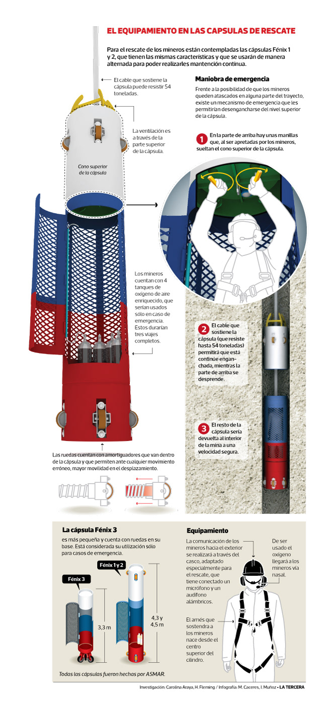
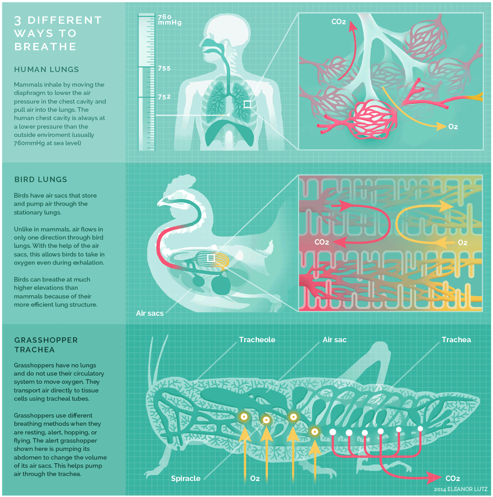
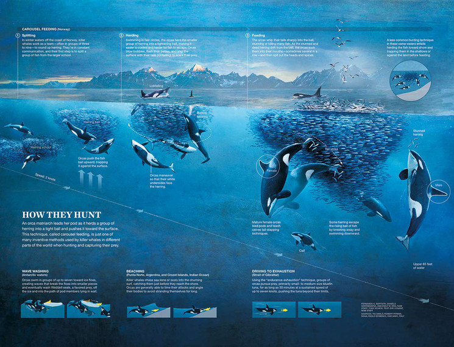
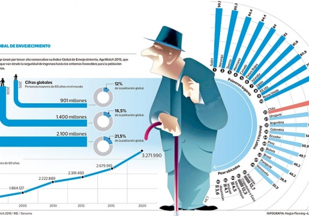
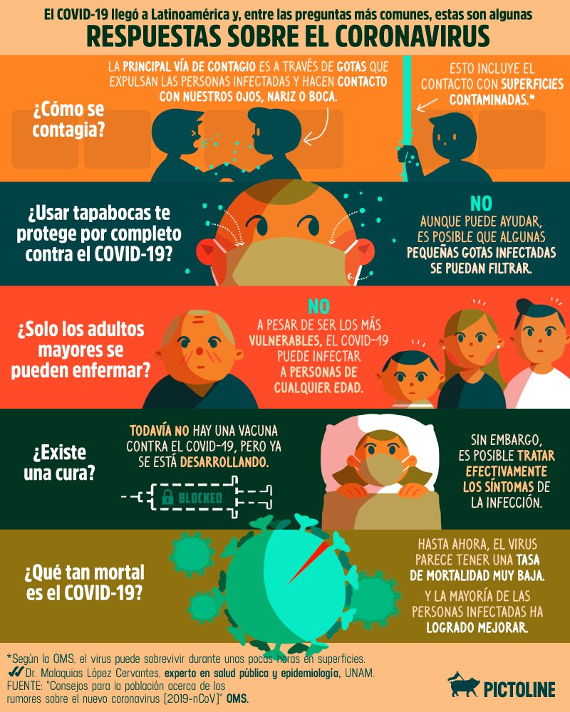
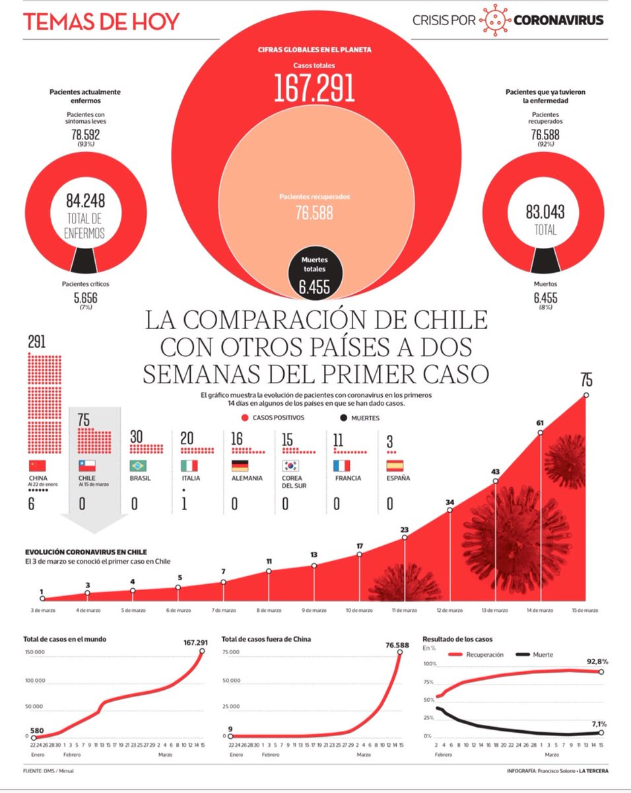
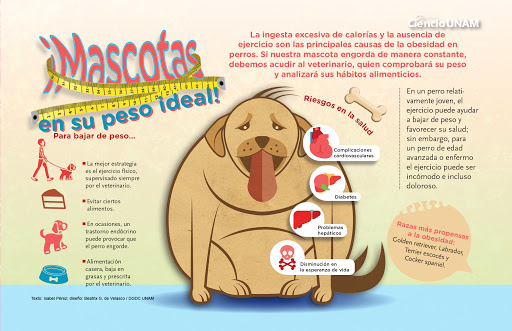

Información en gráficos figurativos

El equipamiento en las capsulas de rescate
Publicado en La Tercera.

3 different ways to breathe
Publicado en Cultura Científica.

How they hunt
Publicado en Condé Nast Traveler.

Anatomía del león
Publicado en elbibliote.com.
Información en gráficos no figurativos

Chile reúne las mejores condiciones para envejecer en América Latina
Publicado en Chile Vive Sano.

Respuestas sobre el Coronavirus
Publicado en Twitter Pictoline.

La comparación de Chile con otros países a dos semanas del primer caso
Publicado en Twitter La Tercera.

Mascotas en su peso ideal
Publicado en Ciencia Unam.